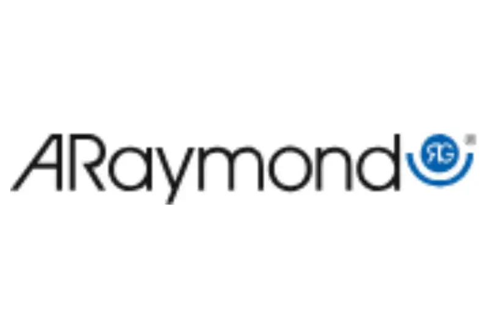
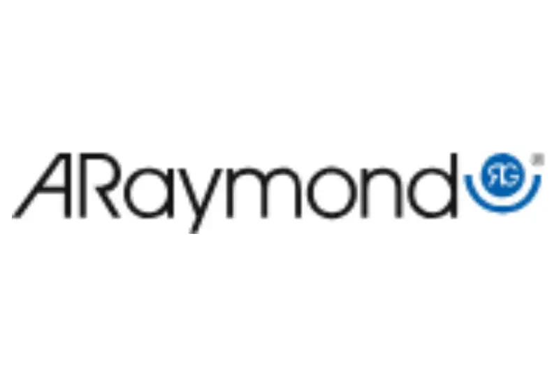

Ersetzen Sie herkömmliche Reiseführer-Tools durch Smartphones.
Sie halten eine Gruppenführung an einem lauten Ort? Oder wo man besonders leise sprechen muss?
Hat Sie der Preis eines herkömmlichen drahtlosen Gruppenführungssystems abgeschreckt?
Nubart® Live ist das, was Sie brauchen. Es ist eine webbasierte Lösung, die problemlos auf den Smartphones der Teilnehmer läuft, ohne dass eine App heruntergeladen werden muss. Nubart Live ist extrem einfach zu bedienen, auch für nicht technikaffine Teilnehmer.
Eine Karte mit einem QR-Code stellt die Verbindung zwischen dem Besucher und dem Guide her. Dessen Smartphone fungiert als Sender, die Smartphones der Besucher als Empfänger. So einfach geht's!
Gruppenführungen gehen viel besser – ganz ohne sperrige Technik
Alte Methode
- Guides müssen laut sprechen, um über den Lärm hinweg gehört zu werden
- Gäste tragen sperrige und unhygienische Geräte
- Technik muss gemietet oder gekauft werden
- Internationale Gäste fühlen sich ausgeschlossen
- Keiner stellt Fragen weil es peinlich ist
- Laufende Mietkosten
Mit Nubart LIVE
- Gästerführer sprechen ganz normal und Gäste hören alles auf dem eigenen Smartphone
- Keine App, kein Desinfizieren von Geräten notwendig
- Gäste scannen einfach einen QR-Code – ohne Technikstress
- Optional: KI-Übersetzung in bis zu 35+ Sprachen
- Gäste können Fragen diskret digital stellen
- Einmal zahlen – Teilnehmer können ihre Karten wiederverwenden
Ab 599 € für 500 wiederverwendbare Karten (einmaliger Kauf, kein Abo) · Alle Preise ansehen →
Wie funktioniert Nubart Live - Grundkonzept

Möchten Sie sehen, wie Nubart LIVE bei Ihren Führungen funktioniert?
Kostenloses Testkit anfordernSo einfach wie es nur geht
Wozu eine Gruppenführungsanlage, wenn doch jeder ein Smartphone hat?
Einfach zu bedienen
Sowohl Besucher als auch der Guide scannen den QR-Code auf den Karten. Das war's! Keine Registrierung oder App-Download erforderlich. (Nur der Guide muss sich einloggen).
Erschwinglich
Unser Basispaket mit 500 Karten kostet weniger als das Mieten einer Gruppenführungsanlage und reicht für viele Touren aus.
Anonym
Ihre Besucher müssen keinerlei persönliche Daten angeben, um Nubart Live zu nutzen. Es ist völlig anonym!
KI-Übersetzung
Leiten Sie eine mehrsprachige Gruppe? Kein Problem! Fügen Sie einfach unsere Live-Übersetzungsfunktion hinzu, und alle können unabhängig von ihrer Muttersprache folgen.
Mehr erfahren
Anfragefunktion
Ihre Gäste können jederzeit eine Frage an den Guide stellen, ohne ihn zu unterbrechen: Der Guide kann jederzeit auf die Liste der angesammelten Fragen zugreifen.
So funktioniert's
Leicht zu transportieren
Ein Koffer mit einer Gruppenführungsanlage ist schwer zu tragen und für Diebe attraktiv. Nicht so unsere Karten!
Hygienisch
Gruppenführungsgeräte müssen nach jedem Gebrauch desinfiziert werden. Nicht unsere Karten!
Umweltfreundlich
Geräte erzeugen schädlichen Elektronikmüll. Unsere Karten werden auf FSC-Karton mit CO2-Kompensation gedruckt.
Prüfen Sie Nubart Lives Anwendungsfälle
Anwendungsfälle

Fabrik- und Werksbesichtigungen
Führen Sie Ihre Besucher kostengünstig durch Ihre Fabrikhalle:
In Kombination mit einem unidirektionalen Mikrofon für Smartphones ist Nubart Live ideal für Betriebsbesichtigungen in lärmintensiven Umgebungen.

Stadtführungen
Nubart Live ist ein einfaches und erschwingliches System, um Gruppen durch eine Stadt zu führen:
Die Stimme des Guides übertönt den Verkehrslärm und es spielt keine Rolle, wie weit entfernt die Teilnehmer sind.

Zugänglichkeit für Schwerhörige
Nubart Live hilft Ihnen, Ihre Führungen inklusiver zu gestalten: Die Verwendung von Kopfhörern auf einem Smartphone bietet ein viel besseres Hörerlebnis für Menschen mit Hörschwierigkeiten (keine Störung durch Hintergrundgeräusche, Anpassung der Lautstärke, etc.)

Add-on für AI-generierte Simultanübersetzung
Möchten Sie einen Schritt weiter gehen? Nutzen Sie Nubart LIVE, um Ihre Touren mit unserem innovativen AI-Übersetzungs-Add-on in mehrsprachige Erlebnisse zu verwandeln.
So funktioniert es:
Gleicher nahtloser QR-Code-Scanvorgang wie bei Nubart LIVE
Die Teilnehmer wählen einfach ihre bevorzugte Sprache aus:
die Originalsprache des Reiseführers, um dessen natürliche Stimme zu hören
oder
eine von mehreren verfügbaren Sprachen für die KI-Übersetzung in Echtzeit.
Bedienen Sie internationale Gruppen, ohne Dolmetscher einstellen zu müssen. Ein einziger Guide kann nun effektiv mit Besuchern in verschiedenen Sprachen kommunizieren.
Demo von Nubart LIVE mit KI-Übersetzungs-Add-on
Spielen Sie das Video mit Ton ab!
Beeindruckt von dem, was Sie sehen?
Kostenloses Testkit anfordernInklusive 30 Minuten kostenloser KI-Übersetzung
Fragen an den Guide? Kein Problem
Die meisten Standard-Gruppenführungssysteme (Geräte) ermöglichen es den Gästen nicht, Fragen zu stellen.
Andere verfügen über eine Talkback-Funktion, mit der der Gast eine Frage an die gesamte Gruppe stellen kann. Schüchterne Teilnehmer halten sich da eher zurück, während die Wagemutigsten manchmal den Guide mit endlosen Fragen unterbrechen und so die gesamte Erfahrung beeinträchtigen.
Nubart Live bietet eine nicht-invasive Lösung, bei der die Fragen auf dem Smartphone des Guides gesammelt werden, so dass er sie zum richtigen Zeitpunkt beantworten kann.
Wenn Sie das Modul für Simultanübersetzung erworben haben, werden die Fragen automatisch übersetzt.
Teilnehmer

Guide

 



Häufig gestellte Fragen
FAQ
Erste Schritte
Während der Tour
Wenn Sie eine Gruppe als Guide eröffnen, empfehlen wir Ihnen, einige zusätzliche Karten zu scannen, für den Fall, dass jemand zu spät kommt.
In diesem Fall übergeben Sie dem verspäteten Teilnehmer einfach eine der bereits gescannten Karten. Das ist alles – er kann sich sofort der Gruppe anschließen.
Sobald Sie die Gruppe schließen, können Sie diese zusätzlichen Karten für die nächste Tour wiederverwenden. Karten verlieren die Übertragbarkeit erst, wenn die Teilnehmer sie selbst scannen, nicht wenn der Guide sie scannt.
Die Latenz wird durch die Leistung des Smartphones, die Verbindungsqualität und den Mobilfunkanbieter.
Wenn der Guide jedoch mit leiser Stimme spricht, ist die Latenz kaum wahrnehmbar – die Teilnehmer hören in erster Linie die verstärkte Stimme aus ihrem Smartphone und nicht das Echo der natürlichen Stimme des Guides.
Die Gruppe bleibt verbunden. Wenn Sie den Anruf beendet haben, kehren Sie zum Browser zurück. Wenn bei einigen Teilnehmern statt grün ein rotes Licht angezeigt wird, tippen Sie auf "Neu laden" – alle werden wieder verbunden, ohne dass sie ihre QR-Codes erneut scannen müssen.
Hinweis: Wenn Sie unter Android vergessen, vor der Annahme stumm zu schalten, können die Teilnehmer möglicherweise Ihre Seite des Gesprächs hören. Auf dem iPhone hören sie nichts.
Weitere Informationen zur Verwendung von Nubart LIVE auf Gruppenreisen.
KI-Übersetzungs-Add-on
Weitere Informationen finden Sie in unserer Anleitung.
Google Translate kann zwar kurze Audioausschnitte abspielen, ist jedoch nicht dafür ausgelegt, einen kontinuierlichen, freihändigen Audiostream bereitzustellen. Jeder Besucher muss die App individuell verwalten, das Mikrofon starten und stoppen, die Wiedergabe auslösen und den kleinen Text auf seinem Bildschirm lesen. Timing, Unterbrechungen und Verzögerungen variieren von Person zu Person, was in einer Gruppe schnell zu Verwirrung führen kann.
Nubart LIVE wurde speziell für Führungen und Werksbesichtigungen entwickelt. Ein Guide spricht in ein Mikrofon, und alle Teilnehmer erhalten synchron denselben Audiostream auf ihrem eigenen Smartphone – ohne dass eine App odr eine bestimmte Sprachkombination heruntergeladen werden muss.
Mit dem optionalen KI-Übersetzungs-Add-on wird die Übersetzung direkt mit dem Live-Audiostream des Guides verknüpft. Die Teilnehmer wählen einfach ihre bevorzugte Sprache aus und nehmen gemeinsam an der Führung teil, anstatt dass jede Person eine separate Übersetzungs-App ausführt.
Kurz gesagt: Google Translate ist ideal für den individuellen Gebrauch; Nubart LIVE wurde für gemeinsame, synchronisierte geführte Erlebnisse entwickelt.
Technische Details
Dies hat jedoch hat dies keine Auswirkungen auf die Gruppenmitglieder: Für sie ist die Akkubelastung nicht viel höher als beim Anhören eines Podcasts oder eines Hörbuchs. Beispielsweise verbraucht eine Stunde Dauerbetrieb 8 % des Akkus eines vier Jahre alten Android-Smartphones.
Karten
Sie senden uns die Bilder, Logos und anderen Elemente, die Sie auf Ihrer Karte haben möchten, und unser Designer erstellt mehrere Designvorschläge, aus denen Sie auswählen können.
Informieren Sie sich über unsere Preise für Nubart LIVE
Wenn Sie Ihre Karten lieber individuell gestalten möchten, beträgt die Mindestbestellmenge 3.000 Stück. Informieren Sie sich über unsere Preise für Nubart LIVE
Bereit, Ihre Gruppenführungen zu transformieren?
Testen Sie Nubart LIVE risikofrei. Erhalten Sie ein Testkit mit 30 Minuten kostenloser KI-Übersetzung.
Kostenloses Testkit anfordernKeine Kreditkarte erforderlich Volle Unterstützung während des Tests